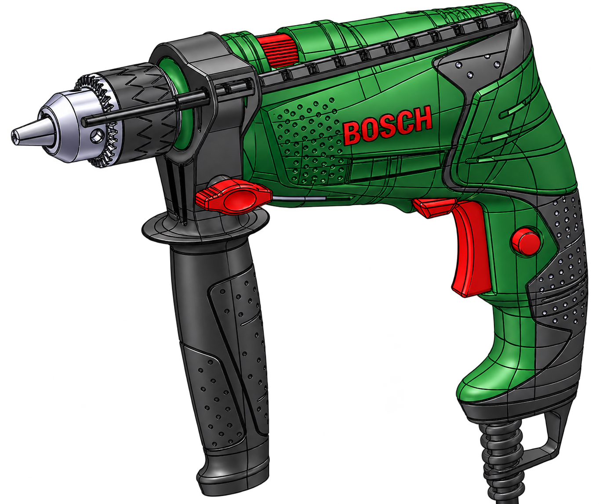

Conception mécanique / CAO
Modélisation d’une perceuse — TN20.
Modélisation détaillée d’un produit mécanique et de ses composants sous CATIA V5.

Présentation
Le projet TN20 porte sur la conception et la modélisation d’une perceuse. La fiche permet de consulter la présentation du projet, ainsi que les fichiers CAO mis à disposition.
Démarche
- Modélisation de pièces et de sous-ensembles mécaniques sous CATIA V5.
- Organisation des composants et préparation de l’assemblage.
- Consultation du site dédié pour comprendre le cahier des charges et les choix de conception.